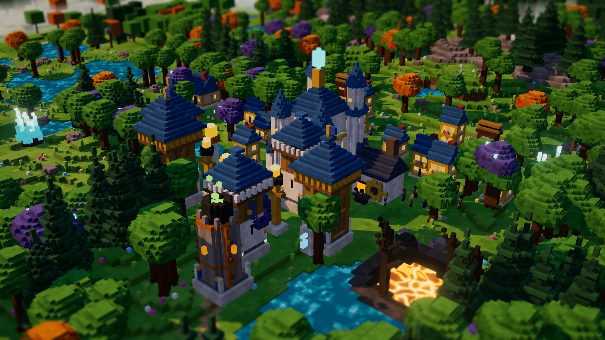
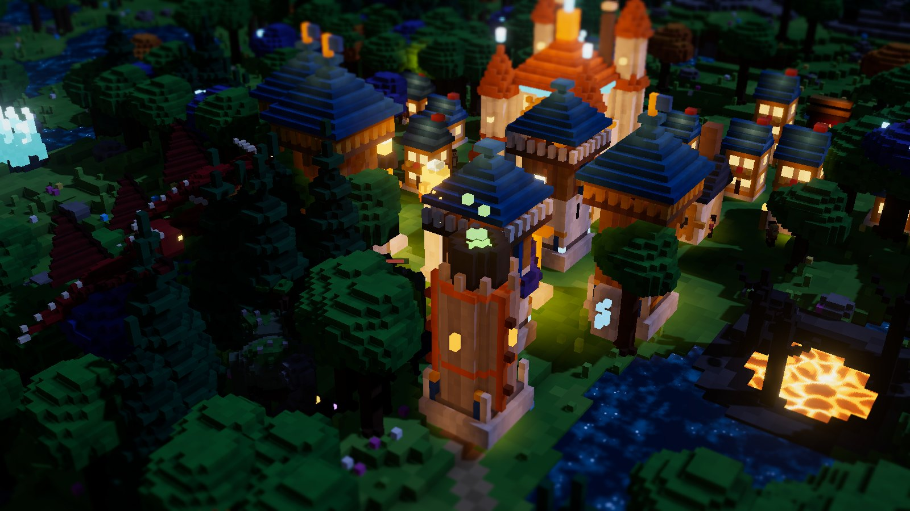
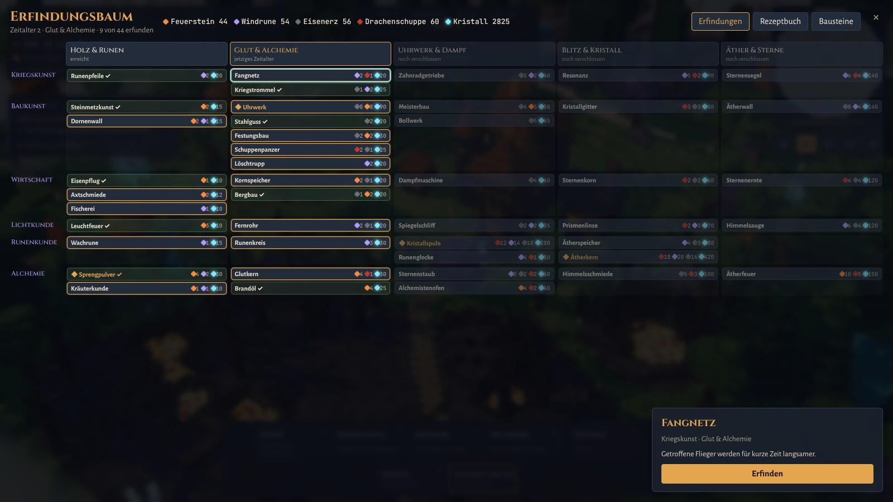
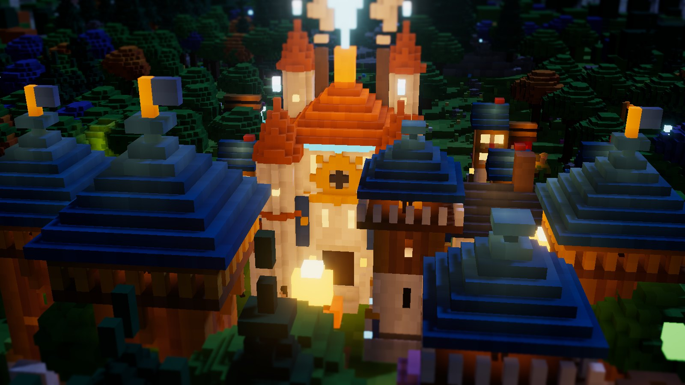

Spielen und herunterladenPlay and download
Direkt im Browser, ohne Installation, oder als App für deinen Rechner. Spielstände bleiben jeweils auf dem Gerät.
Right in your browser without installing anything, or as an app for your computer. Saved games stay on each device.
Die Apps sind noch nicht signiert. macOS: beim ersten Start Rechtsklick → „Öffnen“. Windows: bei der Warnung „Weitere Informationen“ → „Trotzdem ausführen“. Alle Dateien: neuestes Release.
The apps are not signed yet. macOS: right-click → “Open” on first launch. Windows: on the warning choose “More info” → “Run anyway”. All files: latest release.
Tag bauen, Nacht bestehenBuild by day, endure the night
Der Tag ist ruhig: Holzfäller, Bauern und Bergleute ziehen los, Häuser füllen sich, Türme wachsen. Mit dem Abend zeigt eine leuchtende Linie, woher die Welle kommt. In der Nacht sieht man ohne Licht nur Umrisse und glühende Augen. Am Morgen zählst du die Beute und erfindest Neues.
Days are calm: woodcutters, farmers and miners head out, houses fill up, towers rise. At dusk a glowing line shows where the wave will come from. At night you see nothing but outlines and glowing eyes without light. In the morning you count your loot and invent something new.


Aus einem Weltcode
From a world code
Jede Welt mit 1024 × 1024 Blöcken entsteht aus einem Code wie NEBELKRAKE-4127. Gleicher Code, gleiche Welt, auf jedem Gerät und ganz ohne Server.
Every 1024 × 1024 world grows from a code like NEBELKRAKE-4127. Same code, same world, on every device and without a server.
Erkunden
Explore
Bodennebel liegt über dem Unbekannten, Baumkronen und Bergkuppen ragen heraus. Späher und Außenposten decken auf.
Ground fog hides the unknown, only treetops and peaks rise above it. Scouts and outposts reveal the land.
Leuchttürme
Beacons
Im Licht treffen Türme weiter und besser. Höhere Leuchtfeuer machen verborgene Schattenwölfe sichtbar.
Towers in light shoot further and hit more often. Better beacons reveal hidden shadow wolves.
Leben in der Feste
Life in the fortress
Wohnhäuser, Höfe und Fischer versorgen die Bevölkerung. Wer Arbeit hat, sammelt und verarbeitet: Holz zu Balken, Erz zu Stahl, Kristall zu Linsen.
Houses, farms and fishers feed your people. Workers gather and refine: wood into beams, ore into steel, crystal into lenses.
Erfinden statt Forschungsbaum abhakenInvent instead of ticking off a tech tree
Wesen lassen Bausteine fallen: Feuerstein, Windrunen, Eisenerz, Drachenschuppen. Zusammen mit Kristall entstehen daraus über 40 Erfindungen in sechs Wissenszweigen. Schlüsselerfindungen öffnen ein neues Zeitalter, geheime Rezepte zeigen sich erst, wenn die richtigen Bausteine beisammen sind. Jeder Turm wird einzeln umgerüstet, mit zwei Zweigen je Zeitalter. Benachbarte Türme lassen sich verschmelzen.
Creatures drop building blocks: flint, wind runes, iron ore, dragon scales. Together with crystal they become more than 40 inventions in six fields of knowledge. Key inventions open a new age, secret recipes only reveal themselves once the right blocks are at hand. Every tower is upgraded on its own, with two branches per age. Neighbouring towers can be fused.


Drei VölkerThree peoples
Jedes Volk baut mit eigenen Stoffen, hat eigene Stärken und einen eigenen Turm im fünften Zeitalter.
Each people builds with its own materials, has its own strengths and a unique tower in the fifth age.
Glutborn
Schmiede aus dem Feuerberg. Ihr Feuer brennt heißer, ihre Bauten fangen schwer Feuer.
Smiths from the fire mountain. Their fire burns hotter, their buildings resist flames.
- Brand und Feuertöpfe +30 %
- Brände halb so lang
- Schmelze doppelt so schnell
- Eigener Turm: Plasmawerfer
- Fire and fire pots +30 %
- Fires burn half as long
- Smelter twice as fast
- Unique tower: plasma thrower
Hainmar
Hüter des Waldes. Ihre Bauten wachsen und heilen sich selbst.
Keepers of the forest. Their buildings grow and heal themselves.
- Gebäude heilen am Tag
- Holz und Nahrung +30 %
- Bäume wachsen doppelt so schnell
- Eigener Turm: Sonnenstrahl
- Buildings heal by day
- Wood and food +30 %
- Trees regrow twice as fast
- Unique tower: sunbeam
Sturmweber
Baumeister der Höhen. Sie lenken Wind und Blitz.
Builders of the heights. They command wind and lightning.
- Türme reichen 10 % weiter
- Flieger nehmen 25 % mehr Schaden
- Blitze +30 %
- Eigener Turm: Sturmturm
- Towers reach 10 % further
- Flyers take 25 % more damage
- Lightning +30 %
- Unique tower: storm tower
Die Wesen der WildnisCreatures of the wild
Sie kommen aus den Rissen und suchen sich ihren Weg selbst. Jedes verlangt eine andere Antwort.
They come out of the rifts and find their own way. Each one needs a different answer.
Moorwicht · Steintroll
Bog imp · Stone troll
Schwärme und schwere Brocken, später mit Kristallpanzer.
Swarms and heavy brutes, later in crystal armour.
Schattenwolf
Shadow wolf
Im Dunkeln nur ein Augenpaar. Licht macht ihn sichtbar.
Only a pair of eyes in the dark. Light reveals it.
Drachling · Nebelrochen · Aschegeist
Drakeling · Mist ray · Ash wraith
Fliegen über Mauern, legen Feuer und tragen Wichte in die Feste.
Fly over walls, set fires and carry imps into the fortress.
Steinwerfer · Schamane · Borkenwächter
Rock thrower · Shaman · Bark warden
Belagern aus der Ferne, heilen andere, tragen Schilde gegen Pfeile.
Siege from afar, heal others, carry shields against arrows.
Rissfürst
Rift lord
Ruft Wesen herbei, schützt sich mit einem Schild und lässt reiche Beute zurück.
Summons creatures, shields itself and leaves rich loot behind.
Die Stammfeste: 40 Nächte, vier AkteThe home fortress: 40 nights, four acts
Eine Partie hat einen Spannungsbogen und ein Ende. Omen kündigen besondere Nächte an, Wunder und Leitsätze machen jede Feste anders. Wer alle Risse versiegelt, besiegt die Wildnis.
A campaign has an arc and an ending. Omens herald special nights, wonders and guiding principles make every fortress different. Seal all rifts to defeat the wild.
Gründung
Founding
Nächte 1–10: die ersten Türme, Häuser und Erfindungen.
Nights 1–10: first towers, houses and inventions.
Ausbreitung
Expansion
Nächte 11–20: neue Risse, Außenposten an fernen Feldern.
Nights 11–20: new rifts, outposts at distant fields.
Krieg der Risse
War of the rifts
Nächte 21–30: größere Wellen, mehr Rissfürsten.
Nights 21–30: bigger waves, more rift lords.
Versiegelung
Sealing
Nächte 31–40: Siegelsteine an den Rissen. Jeder ruft einen Ansturm hervor.
Nights 31–40: seal stones at the rifts. Each one provokes an onslaught.
Omen
Omens
Blutmond, Nebelnacht, Sturm, Sternenregen, Stille Nacht: einen Tag vorher sichtbar.
Blood moon, fog night, storm, star rain, silent night: visible a day ahead.
Wunder
Wonders
Je Zeitalter eines aus zweien: Großer Leuchtturm, Sternwarte, Uhrwerk-Kolossus, Kristallorgel …
One of two per age: great lighthouse, observatory, clockwork colossus, crystal organ …
Leitsätze
Principles
Bei jedem neuen Zeitalter eine Richtung wählen, etwa Mauern und Fallen oder Reichweite und Licht.
Choose a direction with every new age, such as walls and traps or reach and light.
SteuerungControls
Das Spiel spricht Deutsch, Englisch, Französisch und Spanisch und folgt der Sprache deines Systems.
The game speaks German, English, French and Spanish and follows your system language.